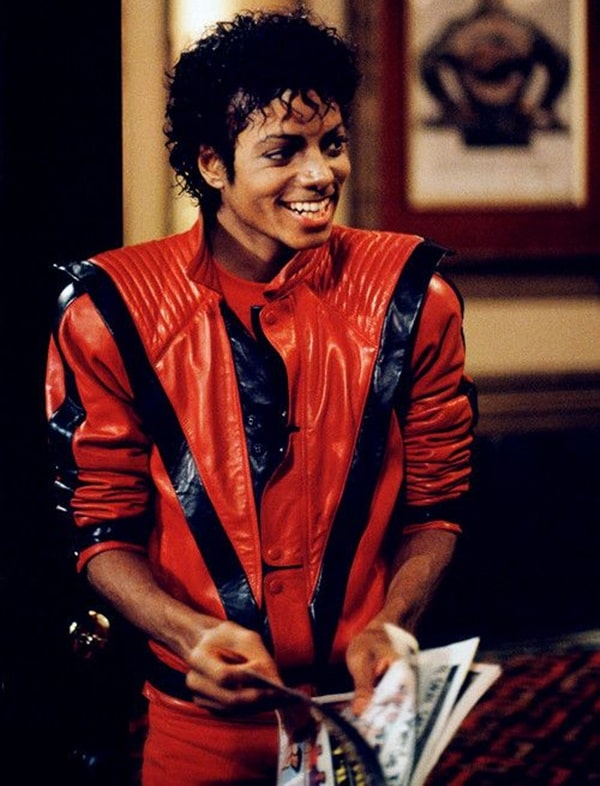
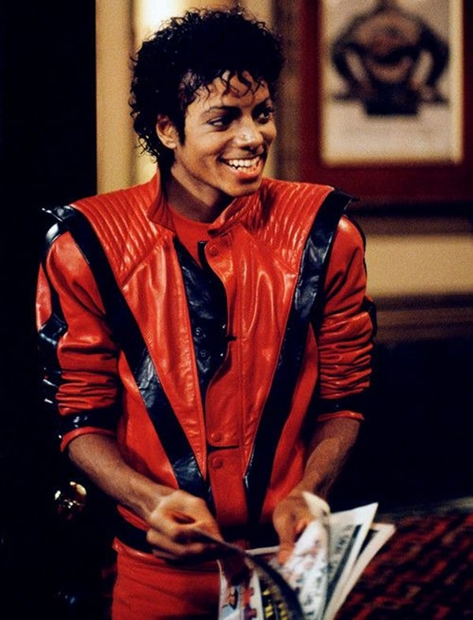

Michael Jackson - ícone do Pop
Michael Jackson foi muito mais do que um cantor e dançarino talentoso. Ele se tornou um símbolo de representatividade negra em um mundo artístico dominado por padrões brancos. Ao alcançar sucesso mundial, ele abriu portas e inspirou milhões de pessoas negras a acreditarem em seu potencial e orgulho racial.
Em suas músicas e atitudes, Michael mostrou que o talento e a arte não têm cor. Sua presença nos palcos, videoclipes e premiações ajudou a quebrar barreiras raciais e a ampliar o espaço para artistas negros na mídia internacional.
Durante o mês da Consciência Negra, lembrar de Michael Jackson é reconhecer sua importância histórica na luta contra o racismo e na valorização da identidade negra no mundo inteiro. Seu legado vai muito além da música — é também sobre igualdade, respeito e orgulho de ser quem somos.